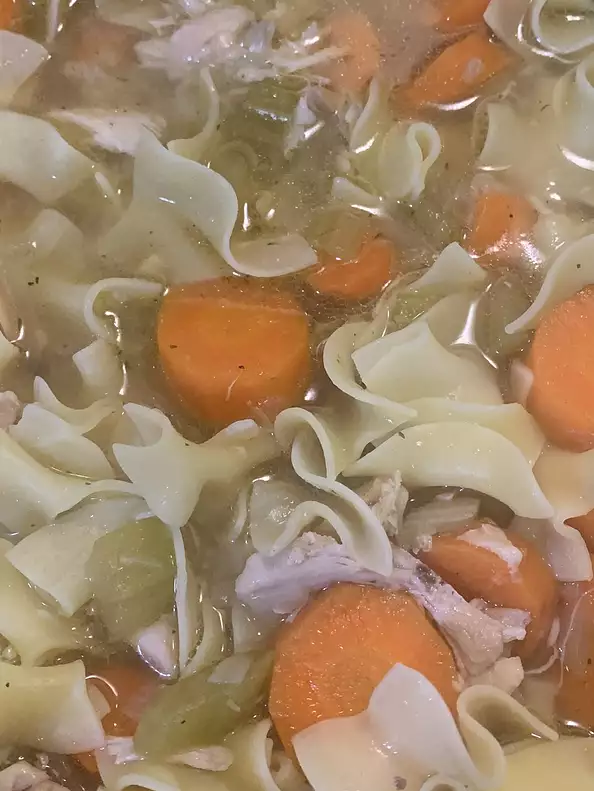

Chicken Soup

Description
Anikas chicken soup. Good for body and soul!
Ingredients
- 1 boneless chicken breast half, cooked and diced
- 2 cups water
- 2 carrots, chopped
- 1 zucchini, diced
- 1 clove garlic, minced
- 1/2 teaspon chicken broth base
Steps
- Put cooked chicken meat and water in a large pot and bring to a boil.
- Add the carrots, zucchini and garlic and simmer all together for 5 to 10 minutes.
- Add the chicken broth and simmer for an additional 5 minutes. Serve.